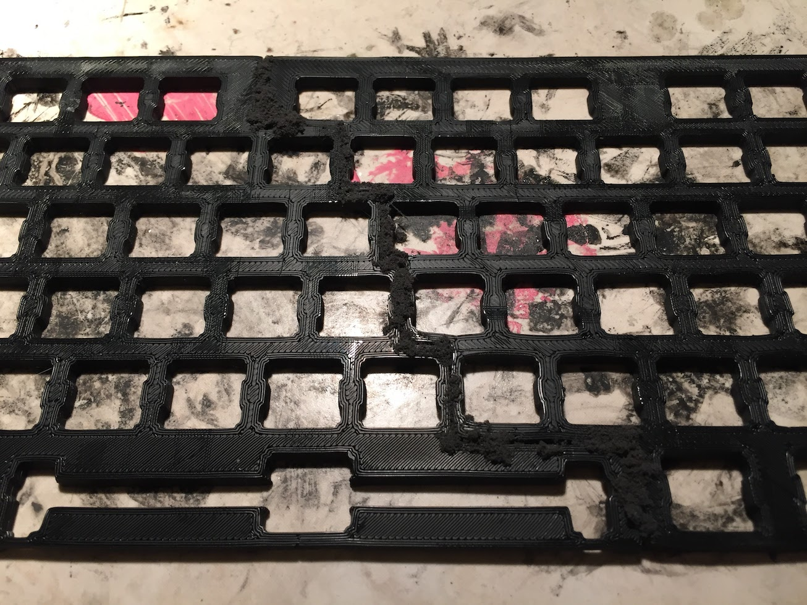

DIY Mechanical Keyboard
After college, a generous friend of mine donated a Ducky mechanical keyboard to me after my normal keyboards began to break down. It was a full sized keyboard with a numpad, but I wanted something smaller. And something a little more attractive.
So, I set about on taking it apart and harvesting its many Cherry MX Blue switches.
Many, many switches.
I wanted a keyboard the size of a tenkeyless keyboard but retaining the numpad, which would also function as the function keys that traditionally lie above the arrow keys. In order to do this, I'd need to create a custom backplate for the switches to attach to.
At first, I tried 3D printing the backplate out of ABS, giving ample thickness to increase the rigidity of the board.
This proved to not be rigid enough. The ABS plate flexed easily. I then turned to the original backplate in the Ducky keyboard.
I cut the backplate into several pieces with a rotary tool and epoxied the parts I wanted together. The end result wasn't beautiful, but yielded a backplate with my custom layout that gave adequate support to the switches.
I began to wire the keyboard together using hookup wire, diodes taken from the Ducky circuit board, and bent paper clips. (Note: Do not use bent paper clips in your circuitry. It will not work out well.)

As a keyboard controller, I used a Teensy 2.0 with firmware from Github. I programmed the Teensy to switch the numpad area between a numpad mode and a function key mode that included volume keys as well as the typical keys found above the direction keys.
I also added some new keycaps! Much easier on the eyes.
I then looked to building a suitable enclosure for my new creation. At first, I tried to construct one of wood moulding.
This proved too weak and it cracked easily. I then bought some aluminum bars from Home Depot and started to craft a stronger enclosure.
It's beautiful!
After a while of use, I ended up adding some legends to the number row as counting keys from the left side proved to take up a large amount of time when typing.